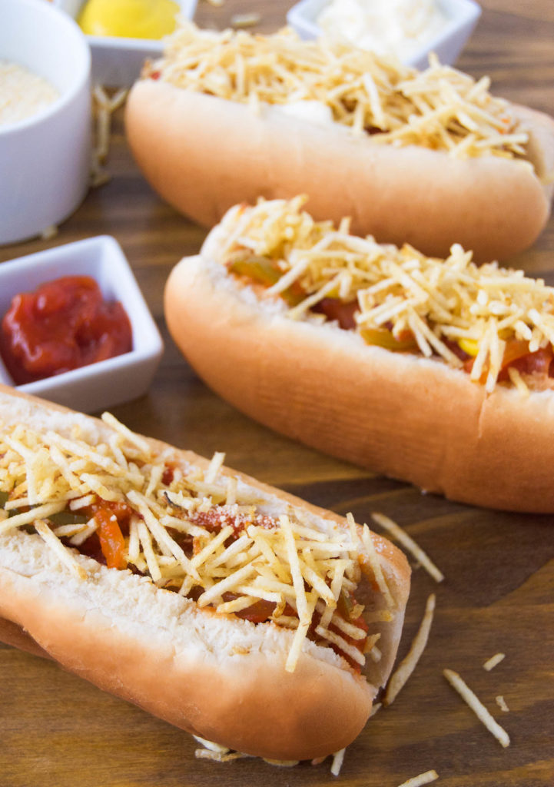

Cachorro Quente - Brazilian Hot Dogs

Description
These Brazilian Hot Dogs are a classic Brazilian childhood favorite!
They're a special treat that's easy to make and tastes oh-so-special.
They're cooked in a tomato sauce with veggies to elevate their flavors and
can be topped with a ton of fun stuff, from the sauce they're cooked in to
Parmesan cheese, some Batata Palha potato sticks, or anything you
like!
Ingredients
- 10 hot dogs
- 10 hot dog buns
- 1 small onion, sliced or 1/2 of a large one
- 1 green bell pepper, seeded and sliced
- 1 teaspoon Brazilian Sofrito or 2 cloves of garlic, minced
- 2 tablespoons unsalted butter
- 1.5 cups marinara sauce
- 1/2 cup water
Steps
-
Using a paring knife, make a slit down the middle of each of the hot
dogs and set aside.
- In a medium-sized saucepan over medium heat, melt the butter.
-
When the butter is melted, add the chopped onions and the bell peppers.
Sautee until the onions are transparent, about 2 minutes.
-
Next, add in the garlic, and sautee until it's fragrant, about 2
minutes.
-
Pour in the marinara sauce and the water, and stir to combine, then
submerge the hot dogs in the sauce. Bring to a simmer.
- Simmer the hot dogs for 5-10 minutes.
-
Place the cooked hot dogs in the buns, and top with the sauce, a
sprinkle of Parmesan cheese, and potato sticks to taste. Dress with
mayo, ketchup and mustard, if desired!
Bom Apetite!
Odin Recipes